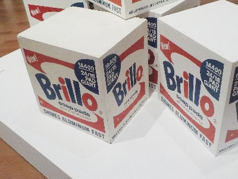
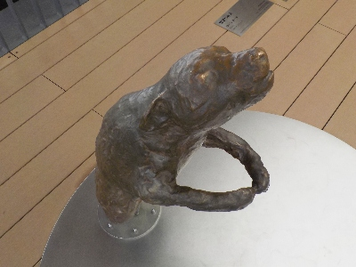

新しく出来た美術館は期待してしまいますね。
2025/06/08

このブリロボックスを見に行きました。
うん。思ってたまんまの作品だ。なんか納得しました。
新しい施設なので何か色々な工夫だとか見どころがあるんじゃないかと期待していたんですが、今回そういうのは発見できませんでした。
今日は人が多かったので、のんびりできなかったからかも。

今回一番印象に残ったのは、この抱きつき犬です。インパクトがありました。
次行くときには再入場がOKになってるといいな。順路は自分で選びたいな。
でも施設の形状からして無理かな。